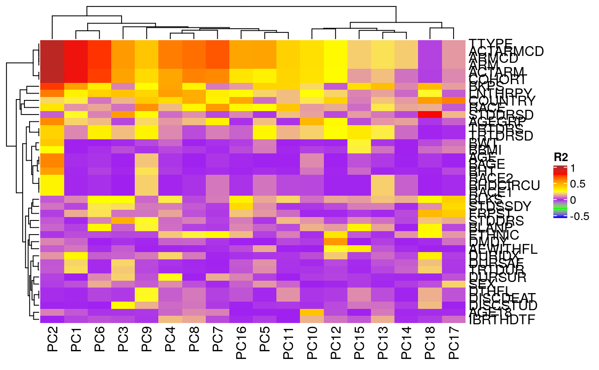
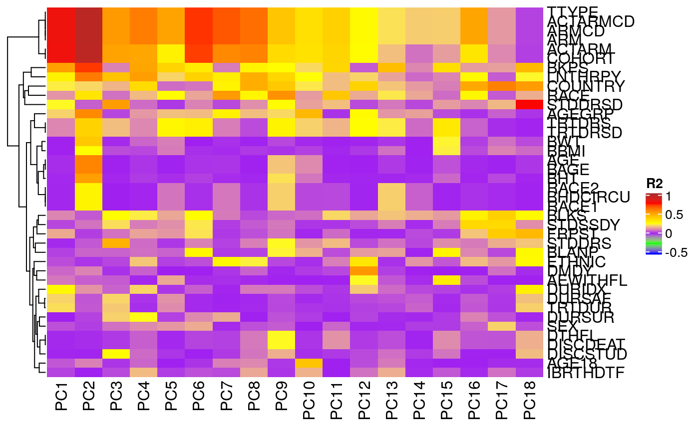

Correlation of Principal Components with Sample Variables
pca_cor_samplevar.Rd
This correlate() method analyses the correlations (in R2 values) between all sample variables
in a AnyHermesData object and the principal components of the samples.
A corresponding autoplot() method then can visualize the results in a heatmap.
# S4 method for HermesDataPca correlate(object, data) # S4 method for HermesDataPcaCor autoplot( object, cor_colors = circlize::colorRamp2(c(-0.5, -0.25, 0, 0.25, 0.5, 0.75, 1), c("blue", "green", "purple", "yellow", "orange", "red", "brown")), ... )
Arguments
| object | ( |
|---|---|
| data | ( |
| cor_colors | ( |
| ... | other arguments to be passed to |
Value
A HermesDataPcaCor object with R2 values for all sample variables.
Functions
autoplot,HermesDataPcaCor-method: This plot method uses theComplexHeatmap::Heatmap()function to visualize aHermesDataPcaCorobject.
See also
h_pca_df_r2_matrix() which is used internally for the details.
Examples
object <- HermesData(summarized_experiment) %>% add_quality_flags() %>% filter() %>% normalize() # Perform PCA and then correlate the prinicipal components with the sample variables. object_pca <- calc_pca(object) result <- correlate(object_pca, object) # Visualize the correlations in a heatmap. autoplot(result)# We can also choose to not reorder the columns. autoplot(result, cluster_columns = FALSE)